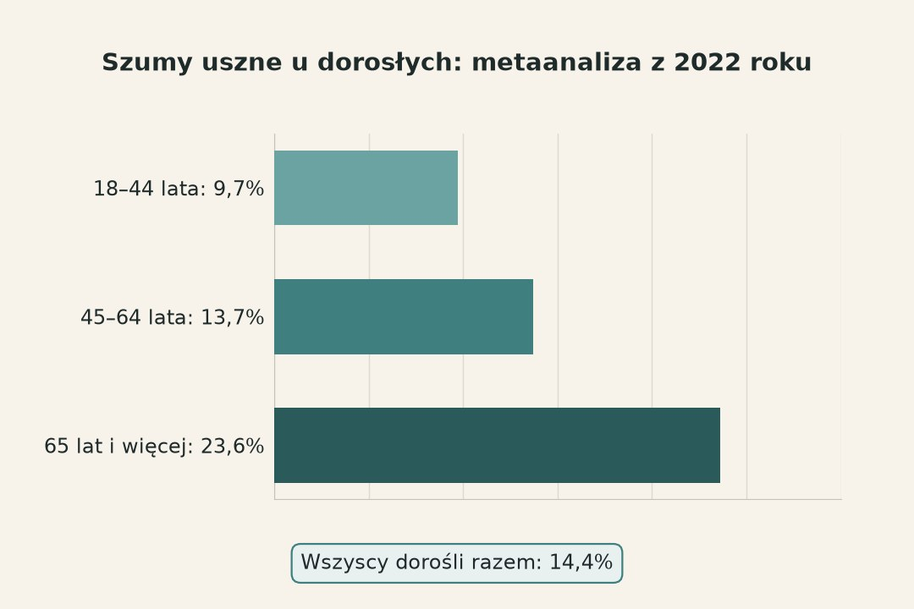
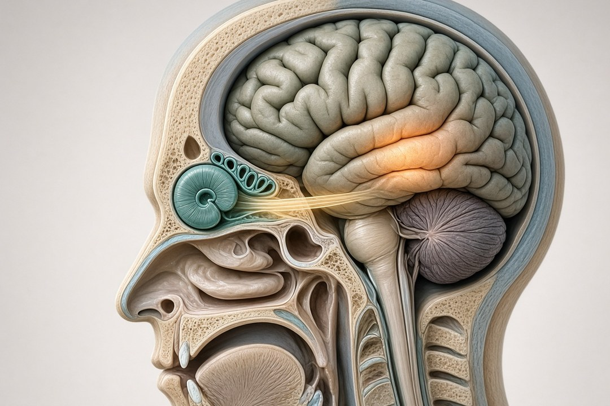
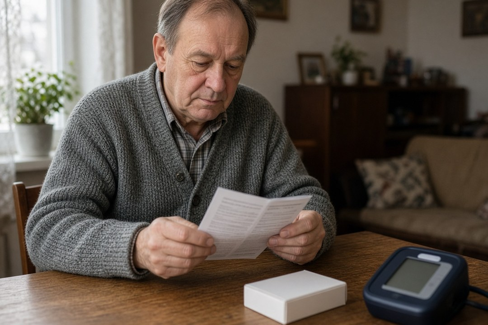
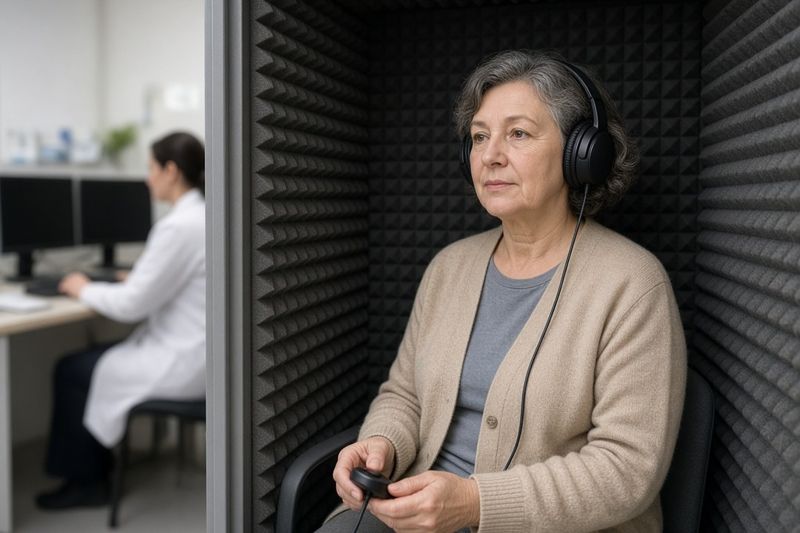

Pisk, buczenie albo szum, którego nikt poza Tobą nie słyszy, po pięćdziesiątce zdarza się często. Jeśli szukasz hasła „szumy uszne przyczyny”, ten tekst wyjaśnia, skąd szum się bierze, kiedy jest sygnałem alarmowym i jak w Polsce dojść od lekarza rodzinnego do laryngologa i badania słuchu. Opieramy się na wytycznych NICE i AAO-HNS, przeglądach Cochrane oraz informacjach NFZ i pacjent.gov.pl.
Szybka odpowiedź
Po 50. roku życia szumy uszne najczęściej wiążą się z niedosłuchem, a rzadko z groźną chorobą. Do lekarza rodzinnego idź, gdy szum trwa, nasila się lub przeszkadza; na SOR, gdy pojawia się z nagłą utratą słuchu, zawrotami głowy, osłabieniem twarzy lub po urazie głowy.
Kluczowe wnioski
- Szum uszny ma 13,7% osób w wieku 45–64 lata i 23,6% osób po 65. roku życia (metaanaliza z 2022 roku).
- Najczęstszym tłem szumów jest niedosłuch związany z wiekiem lub hałasem; inne przyczyny to m.in. woskowina, leki, choroby naczyń i ucha wewnętrznego.
- Szum pulsujący w rytm serca wymaga pilnej wizyty, a stały szum w jednym uchu badań u specjalisty; z nagłą utratą słuchu, zawrotami lub osłabieniem twarzy idź na SOR.
- Do laryngologa na NFZ potrzebujesz skierowania z POZ; wytyczne zalecają leczenie przyczyny, aparat przy niedosłuchu i CBT, a suplementy mają słabe dowody.
Czym są szumy uszne i jak często zdarzają się po 50?
Szumy uszne to dźwięk, który słyszysz tylko Ty: pisk, dzwonienie, buczenie, syczenie albo szum, choć wokół nie ma jego źródła. Lekarze nazywają to tinnitus. Szum może być cichy albo głośny, w jednym uchu, w obu albo „w głowie”, stały albo pojawiający się i znikający.
Z wiekiem szumy są częstsze. W metaanalizie Jarach i współpracowników z 2022 roku, czyli zbiorczym opracowaniu wyników z 83 prac z różnych krajów, jakiś szum uszny miało 14,4% dorosłych. W grupie 45–64 lata było to 13,7%, a wśród osób w wieku 65 lat i więcej 23,6%. To odsetki z badań populacyjnych: mówią, jak często szum zdarza się w grupie, a nie jakie jest Twoje osobiste ryzyko.
Większość tych szumów nie jest ciężka. W tej samej metaanalizie ciężkie szumy miało 2,3% dorosłych, a przewlekłe 9,8%. Przewlekły oznacza według NIDCD (amerykańskiego instytutu badań nad słuchem) szum, który trwa 3 miesiące lub dłużej.
Co z tego wynika: sam szum po pięćdziesiątce jest częsty i tylko rzadko wiąże się z poważną chorobą. Brytyjskie wytyczne NICE zalecają, by lekarz już przy pierwszym kontakcie wyjaśnił, że szumy są częste, mogą ustąpić same i choć często towarzyszą niedosłuchowi, rzadko wiążą się z innymi chorobami ciała. Nie oznacza to, że każdy szum można zostawić bez sprawdzenia: niektóre cechy wymagają szybkiej wizyty i opisujemy je w ramce na końcu tekstu.

Skąd biorą się szumy uszne po 50?
Najczęstszym tłem szumów po pięćdziesiątce jest niedosłuch, czyli ubytek słuchu. NIDCD pisze, że większość osób z szumami ma jakiś stopień niedosłuchu, a ubytek słuchu związany z wiekiem lub hałasem jest z szumami silnie powiązany. Działa to tylko w jedną stronę: część osób z niedosłuchem nigdy nie ma szumów.
Niedosłuch jest w tym wieku częsty. Według WHO wśród osób po 60. roku życia ponad 25% ma niedosłuch upośledzający, czyli ubytek większy niż 35 dB w lepiej słyszącym uchu (dB, decybel, to jednostka głośności). Wśród przyczyn niedosłuchu u dorosłych WHO wymienia niedosłuch odbiorczy związany z wiekiem, czyli stopniowe pogarszanie się pracy ucha wewnętrznego, a także hałas i leki uszkadzające słuch.
Jak niedosłuch może dawać dźwięk, którego nie ma? Jedna z głównych hipotez opisanych przez NIDCD wygląda tak: uszkodzone ucho wewnętrzne wysyła nerwem do mózgu zmieniony sygnał. Część mózgu, która przetwarza dźwięki, czyli kora słuchowa, reaguje na tę zmianę własną aktywnością. Dlatego szum wydaje się dochodzić z ucha, choć wytwarza go mózg. To prowadząca teoria, a nie pełne wyjaśnienie.
Drugi częsty czynnik to hałas. Pacjent.gov.pl radzi unikać hałasu i przyciszać radio, telewizor i odtwarzacz muzyki, a NICE wymienia stres i głośny hałas jako czynniki, które mogą nasilać szumy.
Czasem przyczyna jest prosta. Woskowina albo płyn przy zapaleniu ucha mogą zatkać przewód słuchowy, dlatego lekarz rodzinny zaczyna od obejrzenia uszu. Gdy szum ma taką konkretną przyczynę, jak woskowina albo problem ze stawem żuchwy, jej leczenie może go usunąć albo wyraźnie zmniejszyć.
- Choroby ucha: choroba Ménière’a, czyli choroba ucha wewnętrznego, która daje też zawroty głowy i niedosłuch.
- Choroby przewlekłe: cukrzyca, migrena, choroby tarczycy, niedokrwistość, toczeń i stwardnienie rozsiane.
- Naczynia krwionośne: nadciśnienie, miażdżyca lub nieprawidłowe naczynia blisko ucha mogą zmieniać przepływ krwi i dawać szum.
- Staw żuchwy: zaciskanie albo zgrzytanie zębami może uszkadzać tkanki wokół stawu, który leży tuż przy uchu.
- Urazy głowy lub szyi, które mogą uszkodzić ucho, nerw słuchowy albo obszary mózgu przetwarzające dźwięk.
- Rzadko łagodny guz nerwu prowadzącego od ucha do mózgu, czyli nerwiak nerwu przedsionkowo-ślimakowego.
To lista powiązań, a nie diagnoza. To, że cukrzyca jest na liście chorób związanych z szumami, nie znaczy, że szum u konkretnej osoby wynika z cukrzycy. NIDCD zaznacza też, że u części ludzi szumy pojawiają się bez znanej przyczyny.

Czy ciśnienie, leki i stres mają związek z szumami usznymi?
Tak, każde z nich może mieć związek z szumem, ale w inny sposób. Nadciśnienie i miażdżyca mogą zmieniać przepływ krwi w naczyniach blisko ucha. Niektóre leki mają szum wśród działań niepożądanych. Stres i lęk są z szumami powiązane, a NICE wymienia stres wśród czynników, które mogą szum nasilać.
Przy nadciśnieniu zwróć uwagę na rodzaj szumu. Jeśli szum pulsuje w rytm serca, NHS zaleca poprosić o pilną wizytę u lekarza rodzinnego. Zwykły szum w obu uszach u osoby z nadciśnieniem nie musi wynikać z ciśnienia, bo najczęstszym tłem szumów pozostaje niedosłuch.
Lista leków, po których może pojawić się szum, jest długa. NHS i NIDCD wymieniają niesteroidowe leki przeciwzapalne (NLPZ, np. ibuprofen i naproksen), kwas acetylosalicylowy (aspirynę), niektóre antybiotyki oraz leki przeciwnowotworowe, przeciwmalaryczne i przeciwdepresyjne. NIDCD dodaje, że dotyczy to zwłaszcza dużych dawek.
Leki, które mogą uszkadzać słuch, czyli ototoksyczne, pacjent.gov.pl radzi stosować wyłącznie pod kontrolą lekarza. W praktyce oznacza to: jeśli szum pojawił się po nowym leku, nie odstawiaj go sam, tylko powiedz o tym lekarzowi albo farmaceucie. Decyzja o zmianie leczenia należy do lekarza.
Stres działa w obie strony. Szum może utrudniać sen i koncentrację oraz wywoływać niepokój, jak opisuje NHS, a NICE wymienia stres jako czynnik, który może szum nasilać. Gdy szum jest bardzo uciążliwy, NIDCD opisuje też ryzyko lęku i depresji. Dlatego dbanie o sen i spokój ma sens także przy szumach, choć nie usuwa ich przyczyny.
A kręgosłup szyjny? NIDCD opisuje szum somatosensoryczny, czyli taki, który pojawia się albo zmienia przy ruchu głowy, szyi lub oczu albo przy dotyku niektórych miejsc ciała. Na liście przyczyn są też urazy głowy lub szyi i problemy ze stawem żuchwy. W przejrzanych przez nas wytycznych NICE i AAO-HNS (Amerykańskiej Akademii Otolaryngologii) nie ma natomiast informacji, że zwykłe zwyrodnienie kręgosłupa szyjnego jest częstą przyczyną szumów.

Szum w uchu jak bicie serca albo tylko w jednym uchu: co to oznacza?
Szum pulsacyjny, czyli bijący w rytm serca, oraz szum stale tylko w jednym uchu wymagają dokładniejszej diagnostyki niż zwykły szum w obu uszach. Nie oznaczają automatycznie groźnej choroby, ale lekarz powinien poszukać ich przyczyny.
Szum pulsacyjny jest rzadki. NIDCD pisze, że czasem lekarz słyszy go przez stetoskop; taki szum nazywa się obiektywnym i często ma konkretną, możliwą do leczenia przyczynę. NHS zaleca przy szumie bijącym w rytm tętna pilną wizytę u lekarza rodzinnego, a NICE zaleca u osób z szumem pulsacyjnym badanie obrazowe, czyli na przykład rezonans magnetyczny.
Przy szumie tylko w jednym uchu, trwającym co najmniej 6 miesięcy albo połączonym z kłopotami ze słuchem, wytyczne AAO-HNS z 2014 roku zalecają szybkie, pełne badanie słuchu. NICE zaleca rozważyć rezonans magnetyczny przy szumie jednostronnym albo przy nierównym słuchu po obu stronach. Jedną z rzadkich przyczyn, które bierze się wtedy pod uwagę, jest łagodny guz nerwu słuchowego, opisany w poprzedniej części.
Przy szumie w obu uszach, bez pulsowania, bez objawów neurologicznych i bez nierównego słuchu jest inaczej: AAO-HNS odradza rutynowe badania obrazowe głowy i szyi, a NICE ich wtedy nie zaleca. Najwięcej informacji daje badanie słuchu, które NICE zaleca zaproponować każdej osobie z szumami.
Do jakiego lekarza z szumami usznymi w Polsce?
Zacznij od lekarza rodzinnego, czyli lekarza podstawowej opieki zdrowotnej (POZ). Do laryngologa na NFZ potrzebujesz skierowania od lekarza POZ. Laryngologa nie ma na liście specjalistów dostępnych bez skierowania, także po zmianach z 17 września 2025 roku.
- Lekarz POZ. Pyta o szum, leki i choroby, ogląda uszy i sprawdza, czy przyczyną nie jest woskowina albo zapalenie ucha. Gdy trzeba, wystawia skierowanie do poradni otolaryngologicznej.
- Skierowanie. Lekarz wpisuje na nim kategorię medyczną: przypadek pilny albo stabilny. Pilni pacjenci są przyjmowani w pierwszej kolejności. Na wizytę zapisujesz się w jednej przychodni i dostarczasz skierowanie w ciągu 14 dni od umówienia terminu.
- Terminy. Wolne terminy w poradniach z umową z NFZ sprawdzisz w wyszukiwarce terminyleczenia.nfz.gov.pl.
- Laryngolog (otolaryngolog). Bada uszy i zleca potrzebne badania, w tym badanie słuchu. Przy podejrzeniu ubytku słuchu może skierować do audiologa, czyli specjalisty od słuchu.
Podstawowym badaniem jest audiometria, a jej wynik to audiogram: wykres, który pokazuje, jak dobrze słyszysz dźwięki o różnej wysokości w każdym uchu. NICE zaleca zaproponować badanie słuchu każdej osobie z szumami. Gdy specjalista prowadzi Twoje leczenie, potrzebne badania powinien zlecić na skierowaniu.
Nie czekaj w kolejce, jeśli słuch pogorszył się nagle. Wytyczne AAO-HNS z 2019 roku zalecają badanie słuchu jak najszybciej, w ciągu 14 dni od początku objawów, bo szybkie rozpoznanie i leczenie nagłego niedosłuchu odbiorczego może poprawić powrót słuchu. Z nagłą utratą słuchu i szumem NHS kieruje na oddział ratunkowy, a NICE zaleca wizytę u specjalisty w ciągu 24 godzin.
Nawet bez szumów pacjent.gov.pl i Akademia NFZ radzą kontrolować słuch u laryngologa, jeśli masz 45 lat lub więcej.

Co pomaga na szumy uszne, a co ma słabe dowody?
Nie ma leku, który usuwa szumy uszne, ale są sposoby, by mniej przeszkadzały. Najlepiej opisane w wytycznych są: leczenie przyczyny, jeśli uda się ją znaleźć, aparat słuchowy przy niedosłuchu oraz terapia poznawczo-behawioralna.
Terapia poznawczo-behawioralna (CBT) to praca z psychologiem lub terapeutą, także w formie programu internetowego, w której uczysz się inaczej reagować na szum i myśli z nim związane. Przegląd Cochrane z 2020 roku (28 badań, 2733 osoby) wskazuje, że CBT może zmniejszać negatywny wpływ szumów na jakość życia pod koniec terapii, przy niewielu działaniach niepożądanych; pewność tych danych oceniono jako niską do umiarkowanej. Brakuje danych o efekcie po 6 i 12 miesiącach. NICE zaleca stopniowane wsparcie psychologiczne, zaczynając od cyfrowej CBT. Od 17 września 2025 roku do psychologa w placówce z umową z NFZ możesz zgłosić się bez skierowania.
Aparaty słuchowe i terapia dźwiękiem, czyli ciche dźwięki tła z generatora lub urządzenia w uchu, to obszar, w którym źródła się różnią. NICE zaleca aparat słuchowy osobom z szumami, którym niedosłuch utrudnia porozumiewanie się, i nie zaleca go osobom bez niedosłuchu. NIDCD pisze, że aparat wzmacnia dźwięki z otoczenia, przez co szum staje się mniej zauważalny, a AAO-HNS dopuszcza terapię dźwiękiem jako opcję. Przegląd Cochrane z 2018 roku (8 badań, 590 osób) nie znalazł jednak dowodu, że terapia dźwiękiem, w tym aparaty, jest lepsza od listy oczekujących (czyli braku leczenia w czasie badania), placebo (pozornego leczenia) czy samej edukacji, bo badania nie dostarczyły danych do takich porównań. Nasza interpretacja: to brak dobrych badań, a nie dowód, że metoda nie działa. Aparat warto rozważyć przede wszystkim z powodu niedosłuchu, a mniejszy szum traktować jako możliwą, ale niepewną korzyść.
Suplementy mają słabe dowody. AAO-HNS odradza w szumach miłorząb japoński (ginkgo biloba), melatoninę, cynk i inne suplementy diety. Przegląd Cochrane z 2022 roku (12 badań, 1915 osób) wskazuje, że ginkgo może mieć niewielki lub żaden wpływ w porównaniu z placebo, czyli pozorną tabletką, przy bardzo niepewnych dowodach. NIDCD dodaje, że żadna z reklamowanych witamin, ekstraktów ziołowych i suplementów nie okazała się skuteczna.
Leki też nie są leczeniem samego szumu. NICE zaleca, by nie stosować w szumach betahistyny, a AAO-HNS odradza rutynowe stosowanie leków przeciwdepresyjnych, przeciwdrgawkowych, przeciwlękowych i podawanych do ucha. Lekarz może jednak zaproponować lek poprawiający nastrój lub sen, jeśli szum je zaburza; to decyzja o leczeniu skutków szumu, a nie lek na szum.
Na co dzień NHS proponuje: relaks, na przykład spokojne oddychanie albo jogę, stałą porę snu i mniej kofeiny, unikanie stresu i głośnego hałasu w tle, cichą muzykę zamiast zupełnej ciszy oraz zajęcia, które odciągają uwagę od szumu. Te sposoby pomagają sobie z szumem radzić, ale nie leczą jego przyczyny.
Kiedy szum w uchu wymaga pilnej pomocy?
Sygnały alarmowe: większość szumów nie jest nagła, ale poniższe objawy wymagają szybkiej oceny lekarza. Każdy wiersz opiera się na zaleceniach NHS, NICE, AAO-HNS lub NIDCD, a polskie kroki na informacjach Rzecznika Praw Pacjenta.
| Objaw | Co może oznaczać | Co zrobić | Źródło |
|---|---|---|---|
| Szum z nagłą utratą lub wyraźnym pogorszeniem słuchu | Nagły niedosłuch odbiorczy; szybkie leczenie może poprawić powrót słuchu | Tego samego dnia: SOR; NICE zaleca wizytę u specjalisty w ciągu 24 godzin | NHS, NICE, AAO-HNS 2019 |
| Szum z nagłym osłabieniem mięśni twarzy, innymi nagłymi objawami neurologicznymi lub podejrzeniem udaru | Nagła choroba układu nerwowego, w tym udar | Natychmiast: SOR lub wezwanie pogotowia | NICE, NHS |
| Szum z silnymi zawrotami głowy (uczucie wirowania), które nie mijają | Ostre zaburzenie równowagi wymagające pilnej oceny | Natychmiast: SOR | NICE, NHS |
| Szum po urazie głowy | Uraz może uszkodzić ucho, nerw słuchowy albo mózg | Natychmiast: SOR | NHS, NIDCD |
| Szum, przez który myślisz o odebraniu sobie życia | Kryzys psychiczny | Natychmiast: SOR; do psychiatry nie trzeba skierowania | NICE, RPP |
| Szum pulsujący w rytm serca | Często konkretna przyczyna w naczyniach krwionośnych | Pilnie: lekarz POZ, potem badanie obrazowe | NHS, NICE, NIDCD |
| Szum stale w jednym uchu albo nierówny słuch | Wymaga wykluczenia rzadkich przyczyn, np. guza nerwu słuchowego | Lekarz POZ, skierowanie do laryngologa, pełne badanie słuchu | AAO-HNS 2014, NICE |
| Szum, który odbiera sen, spokój lub koncentrację | Szum uciążliwy, z którym potrzebne jest wsparcie | Lekarz POZ; NICE zaleca specjalistę w ciągu 2 tygodni, gdy cierpienie utrudnia codzienne życie | NHS, NICE |
W Polsce przy stanie nagłego zagrożenia zdrowia zgłoś się na szpitalny oddział ratunkowy (SOR). Gdy przychodnia jest zamknięta, a stan nie jest nagłym zagrożeniem, możesz skorzystać z nocnej i świątecznej opieki zdrowotnej (NiŚOZ): od poniedziałku do piątku od 18.00 do 8.00 oraz całą dobę w weekendy i święta. Ani na SOR, ani w NiŚOZ nie potrzebujesz skierowania. To, czy stan jest nagły, ocenia lekarz, więc w razie wątpliwości lepiej się zgłosić.
Najczęściej zadawane pytania
Czy szumy uszne są groźne?
Zwykle nie. NIDCD pisze, że szumy uszne tylko rzadko wiążą się z poważną chorobą, a najczęściej towarzyszą niedosłuchowi. Szybkiej pomocy wymagają jednak szum z nagłą utratą słuchu, zawrotami głowy, osłabieniem twarzy lub po urazie głowy oraz szum pulsujący w rytm serca. Zobacz ramkę z sygnałami alarmowymi.
Szumy uszne do jakiego lekarza?
Najpierw do lekarza rodzinnego (POZ), który obejrzy uszy i w razie potrzeby wystawi skierowanie do laryngologa. Do laryngologa na NFZ skierowanie jest wymagane. Laryngolog zleca badanie słuchu i może skierować do audiologa. Przy nagłej utracie słuchu, zawrotach albo osłabieniu twarzy idź od razu na SOR.
Czy szumy uszne mogą minąć?
Mogą, ale nie zawsze. NICE i NIDCD piszą, że szumy mogą ustąpić same albo się zmniejszyć, ale u części osób z czasem się nasilają. Szum trwający 3 miesiące lub dłużej uznaje się za przewlekły. Jeśli szum nie mija, nasila się albo przeszkadza, idź do lekarza rodzinnego.
Czy stres powoduje szumy uszne?
Stres i lęk są z szumami powiązane, a NICE wymienia stres wśród czynników, które mogą szumy nasilać. Działa to też odwrotnie: szum może zaburzać sen i koncentrację i wywoływać niepokój. Najczęstszym tłem szumów po 50 pozostaje jednak niedosłuch, więc warto sprawdzić słuch.
Jakie leki powodują szumy uszne?
NHS i NIDCD wymieniają m.in. niesteroidowe leki przeciwzapalne (np. ibuprofen), aspirynę, niektóre antybiotyki oraz leki przeciwnowotworowe, przeciwmalaryczne i przeciwdepresyjne, zwłaszcza w dużych dawkach. Leków nie odstawiaj sam: jeśli szum pojawił się po nowym leku, powiedz o tym lekarzowi lub farmaceucie.
Czy szumy uszne mogą być od kręgosłupa?
Szum może zmieniać się przy ruchu głowy i szyi; NIDCD nazywa go somatosensorycznym. Przyczyną bywają też urazy głowy lub szyi i problemy ze stawem żuchwy. W wytycznych NICE i AAO-HNS nie ma jednak informacji, że zwykłe zwyrodnienie kręgosłupa szyjnego jest częstą przyczyną szumów, więc warto najpierw sprawdzić uszy i słuch.
Jakiej witaminy brakuje, gdy szum w uszach?
W źródłach, które sprawdziliśmy, nie ma witaminy, której niedobór typowo powoduje szumy. NIDCD pisze, że żadna z reklamowanych witamin i suplementów nie okazała się skuteczna, a AAO-HNS odradza w szumach m.in. cynk i melatoninę. NIDCD wymienia natomiast niedokrwistość wśród chorób związanych z szumami; badania krwi zleca lekarz, jeśli widzi taką potrzebę.
Źródła
- NICE NG155 (2020), Tinnitus: assessment and management. Rekomendacje (wytyczne kliniczne NICE, Wielka Brytania)
- Tunkel DE i wsp. 2014, Clinical practice guideline: tinnitus. Otolaryngology–Head and Neck Surgery 151(2 Suppl):S1–S40 (wytyczne AAO-HNS)
- Chandrasekhar SS i wsp. 2019, Clinical Practice Guideline: Sudden Hearing Loss (Update). Otolaryngology–Head and Neck Surgery 161(1_suppl):S1–S45 (wytyczne AAO-HNS)
- Jarach CM i wsp. 2022, Global Prevalence and Incidence of Tinnitus: A Systematic Review and Meta-analysis. JAMA Neurology 79(9):888–900 (metaanaliza; PMID 35939312)
- NHS, Tinnitus (strona informacyjna dla pacjentów; ostatni przegląd 12.01.2024)
- NIDCD (National Institutes of Health), Tinnitus: What Is Tinnitus? Causes and Treatment (aktualizacja 01.05.2023)
- Fuller T i wsp. 2020, Cognitive behavioural therapy for tinnitus. Cochrane Database of Systematic Reviews 2020, issue 1, CD012614 (przegląd systematyczny)
- Sereda M i wsp. 2022, Ginkgo biloba for tinnitus. Cochrane Database of Systematic Reviews 2022, issue 11, CD013514 (przegląd systematyczny)
- Sereda M i wsp. 2018, Sound therapy (using amplification devices and/or sound generators) for tinnitus. Cochrane Database of Systematic Reviews 2018, issue 12, CD013094 (przegląd systematyczny)
- WHO, Deafness and hearing loss (fact sheet, aktualizacja 03.03.2026)
- pacjent.gov.pl (Ministerstwo Zdrowia), Słuchaj uchem (16.04.2024)
- Akademia NFZ, Zadbaj o słuch! (publikacja 10.08.2023, aktualizacja 18.02.2026)
- Rzecznik Praw Pacjenta (gov.pl), Wizyta u lekarza specjalisty (strona bez daty publikacji)
- Rzecznik Praw Pacjenta (gov.pl), Nowa lista lekarzy specjalistów dostępnych bez skierowania od 17 września 2025 r. (27.10.2025)
- Rzecznik Praw Pacjenta (gov.pl), Kiedy zgłosić się na SOR, a kiedy skorzystać z nocnej i świątecznej opieki zdrowotnej (strona bez daty publikacji)
Uwaga: Artykuł ma charakter informacyjny i edukacyjny. Nie zastępuje konsultacji lekarskiej, diagnozy ani leczenia.